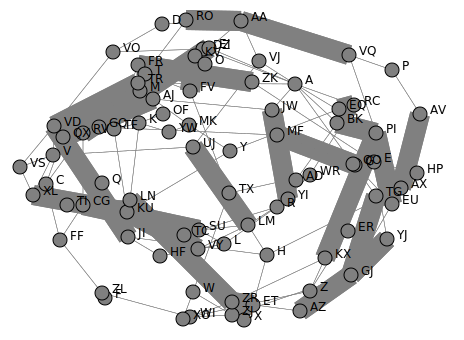

lines = [ [ord(x) -ord("A"), ord(y) -ord("X")]for x, y in [x.split() for x in load(2)]]sum([line[1] +1+3* ((line[1] - line[0] +1) %3) for line in lines])
Part 2
Code
sum([(line[1] + line[0] -1) %3+1+3* line[1] for line in lines])
total =0lines = load(3)for l in lines: letter =set(l[: len(l) //2]).intersection(set(l[len(l) //2 :])).pop() total +=ord(letter.upper()) -ord("A") +1+26* letter.isupper()total
Part 2
Code
total =0for chunk in more_itertools.chunked(lines, 3): letter = functools.reduce(lambda x, y: set(x).intersection(set(y)), chunk).pop() total +=ord(letter.upper()) -ord("A") +1+26* letter.isupper()total
assignments = load(4)regex = re.compile("\d+")assignments =map(lambda x: [int(y) for y in re.findall(regex, x)], assignments)assignments = [sorted([a[:2], a[2:]]) for a in assignments]sum((a[1] >= b[1] or a[0] == b[0]) for a, b in assignments)
Part 2
Code
sum((a[1] >= b[0] or a[0] == b[0]) for a, b in assignments)
lines = load(5)numbers = [re.findall("\d+", line) for line in lines]split = np.argmax([len(x) for x in numbers])instructions = [[int(y) for y in x] for x in numbers[split +1 :] if x]initial_state =list(itertools.zip_longest(*lines[:split]))letters = [re.findall("[A-Z]", "".join(column)) for column in initial_state]p1 = [x[::-1] for x in letters.copy() if x]for n, source, dest in instructions:for i inrange(n): p1[dest -1].append(p1[source -1].pop())"".join(x[-1] if x else" "for x in p1)
Part 2
Code
p2 = [x[::-1] for x in letters.copy() if x]for n, source, dest in instructions: p2[dest -1] += p2[source -1][-n:] p2[source -1] = p2[source -1][:-n]"".join(x[-1] if x else" "for x in p2)
This requires a bit of tedious bookkeeping, but is otherwise straightforward.
Keeping track of full names is necessary, since “/foo/baz” and “/bar/baz” refer to two different directories.
The following code has a bug where it will show incorrect totals if the contents of the same directory are described more than once. Luckily, that doesn’t seem to ever happen.
It really feels like there should be a slick array-based solution to this: calculate the cumulative max from each of the four directions, take the minimum of those four and compare with our array. But it doesn’t seem like numpy has easy functionality for calculating the cumulative max.
A bit off digging reveals the very useful ufunc accumulate, which does exactly what we need. Then it’s just a question of getting it to work in the four directions. Either we change the axis and direction of operation, or (as here) we transform the data from one orientation to another, do the accumulation, and transform back at the end.
Code
data = np.array([[int(char) for char in line] for line in load(8)])masks = []for i inrange(4): transformed = np.rot90(data, i) mask = np.roll(np.maximum.accumulate(transformed), 1, axis=0) mask[0] =-1 masks.append(np.rot90(mask, 4- i))mask = np.min(masks, axis=0)(data > mask).sum()
Part 2
The conceptual approach for this is similar - find a way of calculating the score in one direction, then transform the data to use that operation for the other directions.
There are a couple of gotchas:
The elves’ sightlines are blocked by trees of the same height, not just by trees of greater height. If we want to leverage maximum as an indicator, we need to decrease the value of the tree under consideration by one, since otherwise there’s no way of distinguishing between a, a - 1 (not blocked) and a, a (blocked).
The elves can see the tree that they’re being blocked by. If we try to account for this by just adding one to all the sightlines, we’ll get a bug when they can see all the way to the edge. Instead, we pretend that they can always see the last tree in the forest
Code
def scenic_score(data):def one_row(i):"""How many trees can be seen looking down from row i""" current = data.copy() current[i] = current[i] -1 mask = np.maximum.accumulate(np.roll(current, -i, axis=0)) <= current[i] mask[-i -1] =Truereturn mask[1 : len(data) - i].sum(axis=0)return np.array([one_row(i) for i inrange(len(data))])scenic_scores = []for i inrange(4): scenic_scores.append(np.rot90(scenic_score(np.rot90(data, i)), 4- i))np.product(scenic_scores, axis=0).max()
Bonus
The grid here invites plotting. One thing we can plot is the shortest tree which would be visible at each location
Code
import matplotlib.pyplot as pltplt.imshow(mask +1)plt.xticks([]), plt.yticks([])a = plt.colorbar()
The shortest visible tree at each location
We can see how at the edges of the forest shorter trees are visible, but towards the center they’ve all been shadowed by taller trees.
instructions = load(10)deltas = [int(element) if element[-1].isdigit() else0for line in instructionsfor element in line.split()]def run(f, result):for cycle, x inenumerate(np.cumsum([1] + deltas)): result += f(x, cycle +1)return resultrun(lambda x, y: x * y if y %40==20else0, 0)
Part 2
Code
def draw_sprite(sprite_position, cycle):return"█"ifabs(sprite_position - ((cycle -1) %40)) <=1else" "print(*[run(draw_sprite, "")[40* i : 40* (i +1)] for i inrange(6)], sep="\n")
data = load(11, "raw")monkeys = data.split("\n\n")class Monkey:def__init__(self, update, test):self.update = updateself.factor = test[0]self.target =lambda x: test[1] if x %self.factor ==0else test[2]monkeys = []initial_items = []for monkey in data.split("\n\n"): lines = [line for line in monkey.split("\n") if line] update =eval("lambda old: "+ lines[2].split(" = ")[1]) digits = [[int(x) for x in re.findall("\d+", line)] for line in lines] monkeys.append(Monkey(update, [x[0] for x in digits[-3:]])) initial_items.append(digits[1])def run(rounds, function): examined = [0] *len(monkeys)for monkey, items inzip(monkeys, initial_items): monkey.items = items.copy()for _ inrange(rounds):for idx, monkey inenumerate(monkeys): examined[idx] +=len(monkey.items)for i inrange(len(monkey.items)): item = function((monkey.update(monkey.items.pop()))) monkeys[monkey.target(item)].items.append(item)return examinednp.product(sorted(run(20, lambda x: x //3))[-2:])
Part 2
Code
common_multiple = np.product([x.factor for x in monkeys])np.product(sorted(run(10000, lambda x: x % common_multiple))[-2:])
data = [list(x) for x in load(12)]elevations = np.array([[ord(char) -ord("a") for char in line] for line in data])source =tuple(x[0] for x in np.where(elevations ==ord("S") -ord("a")))target =tuple(x[0] for x in np.where(elevations ==ord("E") -ord("a")))elevations[source] =0elevations[target] =25xmax, ymax = elevations.shapedef grid_neighbors(x, y): candidates = [(x -1, y), (x +1, y), (x, y -1), (x, y +1)]return [c for c in candidates if0<= c[0] < xmax and0<= c[1] < ymax]def find_neighbors(x, y):return [n for n in grid_neighbors(x, y) if elevations[n] - elevations[x, y] <=1]def navigate(source, neighbor_func, stop_condition): active = deque([(0, source)]) seen =set()while active: steps, current = active.popleft()if stop_condition(current):return stepsif current in seen:continue seen.add(current)for neighbor in neighbor_func(*current): active.append((steps +1, neighbor))return np.infnavigate(source, find_neighbors, lambda x: x == target)
Part 2
Code
def reversed_neighbors(x, y):return [n for n in grid_neighbors(x, y) if elevations[x, y] - elevations[n] <=1]navigate(target, reversed_neighbors, lambda x: elevations[x] ==0)
import astdef compare(left, right):ifisinstance(left, int) andisinstance(right, int):return (left > right) + (left >= right)ifisinstance(left, int):return compare([left], right)ifisinstance(right, int):return compare(left, [right])ifnot left andnot right:return1ifnot left:return0ifnot right:return2 val = compare(left[0], right[0])return val if (val ==0or val ==2) else compare(left[1:], right[1:])total =0s = load(13, "raw")[:-1]for idx, (left, right) inenumerate(map(lambda x: x.split("\n"), s.split("\n\n"))): val = compare(ast.literal_eval(left), ast.literal_eval(right))if val ==0: total += idx +1total
Part 2
Code
dividers = [[2]], [[6]]packets = [ ast.literal_eval(packet) for pair in s.split("\n\n") for packet in pair.split("\n")]positions = [sum(compare(divider, packet) ==2for packet in packets) for divider in dividers](positions[0] +1) * (positions[1] +2)
def combine_two_intervals(i1, i2): i1, i2 =sorted([i1, i2])if i2[0] <= i1[1]:return i1[0], max(i1[1], i2[1])returnFalsedef combine_n_intervals(intervals): active = intervals.copy() result = []while active: current = active.pop()for index, previous inenumerate(result): new_interval = combine_two_intervals(current, previous)if new_interval:del result[index] active.append(new_interval)breakelse: result.append(current)return resulty_target =2000000fixes =set()intervals = []for x, y, u, v in load(15, "int"): r =abs(x - u) +abs(y - v)if v == y_target: fixes.add(u) available = r -abs(y - y_target)if available >=0: interval = x - available, x + available +1 intervals += [interval]intervals = combine_n_intervals(intervals)sum(x[1] - x[0] for x in intervals) -len(fixes)
We should start by loading the data, and trying to visualize the graph
Code
import sknetworkgraph = {}pressures = {}for line in load(16): pressure =int(re.findall(r"\d+", line)[0]) left, right = line.split(";") node = left.split()[1] neighbors = [ x.strip() for x in re.sub(".*valves? (.*)", r"\1", right[:-1]).split(",") ] graph[node] = neighborsif pressure >0: pressures[node] = pressureg = sknetwork.data.from_adjacency_list(graph, weighted=False)from IPython.display import SVGfrom sknetwork.embedding.force_atlas import ForceAtlasforceatlas2 = ForceAtlas()embedding = forceatlas2.fit_transform(g.adjacency)image = sknetwork.visualization.svg_graph(g.adjacency, embedding, names=g.names)SVG(image)

The network of rooms and valves, and how they link together
Looks pretty cool!
Code
distances = { (j, i): 0if i == j else100if i notin graph[j] else1for i in graphfor j in graph}# Very slick Floyd-Warshall: The distance between two nodes i and j is the minimum over# all paths from i to j, which in turn is the minimum of the sum d(i, k) + d(j,# k) over all nodes k. Shamelessly stolen. Could have been done with some# pathfinding instead, but that would have been slower.for k, i, j in itertools.permutations(graph, 3): distances[i, j] =min(distances[i, j], distances[i, k] + distances[k, j])def expand(node, time_remaining): result = {}# For each possible set of open valves, we store the result of opening them# in the optimal order. We take care not to exceed the time alloted to us,# and not to open a valve twice.def inner(node, time_remaining, used_valves, flow): result[used_valves] =max(result.get(used_valves, 0), flow)for other_node, pressure in pressures.items(): new_time_remaining = time_remaining - distances[node, other_node] -1if new_time_remaining <=0or other_node in used_valves:continue inner( other_node, new_time_remaining, used_valves |frozenset([other_node]), flow + new_time_remaining * pressure, ) inner(node, time_remaining, frozenset(), 0)return result# The result for part 1 is thenmax(expand("AA", 30).values())
Part 2
For part 2, we don’t need to consider the two agents together. We can just find the best pair of valve sets with no overlaps.
Code
part2_paths = expand("AA", 26)max( v1 + v2for s1, v1 in part2_paths.items()for s2, v2 in part2_paths.items()ifnot (s1 & s2))
shapes = [ np.array( [[0if char =="."else1for char in line] for line in x.split("\n")], dtype=bool, )for x in ["####", ".#.\n###\n.#.", "..#\n..#\n###", "#\n#\n#\n#", "##\n##"]]directions = load(17, "raw").strip()def has_collision(x, y, shape, board):if y <0:returnFalse height, width = shape.shape window = np.pad( shape[max(0, height - y -1) :], [[0, 0], [x, 7- x - width]], mode="constant", ) top_of_window = y - window.shape[0] +1return (board[top_of_window : top_of_window + window.shape[0]] & window).any()def find_height(directions, n=2022): board = np.ones((1, 7), dtype=bool) discard =-1 d =0 seen = {} cycle_length =Nonefor i inrange(n): shape = shapes[i %len(shapes)] height, width = shape.shape x, y =2, -4whileTrue: direction = directions[d] d = (d +1) %len(directions)if direction ==">":if x + width !=7andnot has_collision(x +1, y, shape, board): x +=1else:if x !=0andnot has_collision(x -1, y, shape, board): x -=1if y <-1: y +=1else:if has_collision(x, y +1, shape, board): old_board = board.copy() board = np.pad( board, [[max(height - y -1, 0), 0], [0, 0]], mode="constant" ) loc =max(y - height +1, 0) board[loc : loc + height, x : x + width] += shapebreak y +=1 row = board.all(axis=1).argmax() discard += board.shape[0] - row -1 board = board[: row +1] state = (i %len(shapes), d, tuple(np.ravel(board)))if state in seen:if cycle_length isNone: cycle_length = i - seen[state][0]if (i % cycle_length) == (n % cycle_length): delta_h = board.shape[0] + discard - seen[state][1]return board.shape[0] + discard + delta_h * ((n - i) // cycle_length) seen[state] = i, board.shape[0] + discardreturn seen[state][1]find_height(directions)
Part 2
Actually simulating that many steps isn’t possible, so we should probably look for a loop of some kind. To avoid having to think too much, we’ll say that after any given rock has fallen the state is (shapeindex, windindex, hash of board above latest full line). If a state ever repeats, we know it will go on repeating forever, so we can just advance until we’re at the same point in the cycle as the very end, and then add on however many cycles we need
Code
find_height(directions, 1_000_000_000_000) -1
There’s a weird off by one error in my code which is only present for some cases. I can’t be bothered to find out why.
Idea: find all neighboring boxes by finding the union of the shifts along each of i,j,k,-i,-j,-k and subtracting the original shape. A given box might neighbor the original shape in up to six places, so to account for that I can take all the neighbors, shift them again along each of the axes, and for each shift, count how many boxes now overlap the original shape.
Code
data = load(18, "np")def to_set(arr):returnset(tuple(x) for x in arr)def inflate(data):ifisinstance(data, set): data = np.array(list(data))return to_set(np.vstack([row + data for row in deltas])) - occupiedoccupied = to_set(data)deltas = (np.tile(np.eye(3, dtype=int), 2) * np.repeat((1, -1), 3)).Tnb = inflate(data)arr = np.array(list(nb))sum([len(to_set(arr + delta) & occupied) for delta in deltas])
Part 2
For part 2, once we have identified which of the neighboring boxes represent external neighbors (i.e. are connected to the outside world), we can do exactly the same thing. The tricky thing is then to make this identification. Under the assumption that the droplet is connected, so that every box in the droplet is reachable from every other via a series of face, edge or corner moves, then every point the outside boundary is face-connected to every other after at most two inflations. I can then use a union find data structure to merge all the connected groups together, and the outside group is then the largest of all of these
Code
from scipy.cluster.hierarchy import DisjointSetpoints = inflate(data)for i inrange(2): points = inflate(points)disjoint_set = DisjointSet(points)for x in points: comparisons = x + np.eye(3, dtype=int)for comparison in comparisons:if (y :=tuple(comparison)) in disjoint_set: disjoint_set.merge(x, y)max_s =0for subset in disjoint_set.subsets():iflen(subset) > max_s: max_s =len(subset) s = subsetarr = np.array(list(s & nb))sum([len(to_set(arr + delta) & occupied) for delta in deltas])
The core of this problem is to develop an approach that can take a list of prices and generate an optimal build. Blindly taking every action probably won’t work, but is maybe worth examining as a first attempt.
Instead of simulating each of the 24 different time steps, we should focus on the build order, so the decision at any given point in time is which robot to build next. We should bail from any given branch if:
The time has exceeded the maximum time available
We have built more robots of a given kind than are needed by any of the recipes
We’ve already seen a better situation: Suppose we’ve previously found a state with a given config of robots at t1, and now have built the same robots at a later time t2. If we could have the same or more resources at t2 by using the t1 config and just waiting, then the first build order is strictly better.
Code
def score(geodes, time, t_max=24): time_remaining = t_max - time -1return-(geodes + time_remaining * (time_remaining +1) //2)def is_better(t1, r1, g1, i, t2, r2, g2):returnFalse# (t2 >= t1) and (g1 >= g2) and ((r1 + (t2 - t1) * i) >= r2).all()def evaluate(costs, t_max=24): seen = defaultdict(dict) max_prices = costs.max(axis=0) income = np.array([1, 0, 0]) resources = np.array([0, 0, 0]) time =0 geodes =0 initial_state = ( score(geodes, time, t_max), time, geodes,tuple(income),tuple(resources), ) q = PriorityQueue() q.put(initial_state) max_geodes =0while q.qsize() >0: _, time, geodes, income, resources = q.get() income, resources = np.array(income), np.array(resources)if time == t_max:breakfor t1, (r1, g1) in seen[tuple(income)].items():if is_better(t1, r1, g1, income, time, resources, geodes):breakelse: seen[tuple(income)][time] = (resources, geodes)with np.errstate(divide="ignore", invalid="ignore"): waits = (costs - resources) / income waits[np.isnan(waits)] =0for idx, wait inenumerate(np.ceil(waits.max(axis=1))): wait =max(wait, 0)if time + wait +1> t_max:continue# Turns to wait for resources, plus one to build dt =int(wait) +1 new_time = time + dt new_income = income.copy() new_geodes = geodesif idx !=3:if income[idx] >= max_prices[idx]:continue new_income[idx] +=1else: new_geodes += t_max - new_timeif new_geodes > max_geodes: max_geodes = new_geodes new_resources = resources.copy() + income * dt - costs[idx] q.put( ( score(new_geodes, new_time, t_max), new_time, new_geodes,tuple(new_income),tuple(new_resources), ) )return max_geodestotal =0for blueprint_id, *l in load(19, "int"): costs = np.array([[l[0], 0, 0], [l[1], 0, 0], [l[2], l[3], 0], [l[4], 0, l[5]]]) total += blueprint_id * evaluate(costs)total
Part 2
Code
total =1for _, *l in load(19, "int")[:3]: costs = np.array([[l[0], 0, 0], [l[1], 0, 0], [l[2], l[3], 0], [l[4], 0, l[5]]]) total *= evaluate(costs, 32)total
I was almost caught out by the fact that there can be duplicate entries in the data; my original linked list in a dictionary didn’t account for this, so nodes were silently dropped. Oops.
Otherwise the simple approach ended up working: make a list of node -> (predecessor, successor), and to move a given element simply follow the pointers the relevant number of times.
To save time, I map each rotation to the range [-l/2, l/2] where l is the length of the linked list. The idea is that for a circular list of length l, moving l-1 steps to the right is the same as not moving, and since the list is doubly linked, moving one step to the left is better than moving l-2 steps to the right.
Code
def mix(data, n=1): unique_data =list(enumerate(data)) ll = { k: [p, n]for (k, p, n) inzip( unique_data, [unique_data[-1]] + unique_data[:-1], unique_data[1:] + [unique_data[0]], ) }for i inrange(n):for value inenumerate(data): mod =len(data) -1 offset = mod //2 shift = (value[1] + offset) % mod - offsetif shift ==0:continue current = ll[value] ll[current[0]][1] = current[1] ll[current[1]][0] = current[0]del ll[value] coord =1if shift >0else0for _ inrange(abs(shift)): current = ll[current[coord]] succ = current[coord] pred = ll[succ][1- coord]if shift <0: pred, succ = succ, pred ll[value] = [pred, succ] ll[pred][1] = value ll[succ][0] = value v = (data.index(0), 0) result = []for _ inrange(len(ll)): result.append(v[1]) v = ll[v][1]returnsum(result[((i +1) *1000) %len(result)] for i inrange(3))data =list(load("20", "np"))mix(data)
data = load(22, "raw")chart, instructions = data.split("\n\n")chart = chart.split("\n")target =max(len(x) for x in chart)chart = [[x for x in line.ljust(target, " ")] for line in chart]board = np.array(chart)start_x = (board[0] ==".").argmax()y, x =0, start_xdy, dx =0, 1ymax, xmax = board.shapeR = np.array([[0, 1], [-1, 0]])L =-Rmatrices = {"L": L, "R": R}instructions = instructions.replace("R", " R ").replace("L", " L ").split()for instruction in instructions:if instruction in"LR": dy, dx = matrices[instruction] @ [dy, dx]else:for _ inrange(int(instruction)): next_y, next_x = (y + dy) % ymax, (x + dx) % xmaxwhile board[next_y, next_x] ==" ": next_y, next_x = (next_y + dy) % ymax, (next_x + dx) % xmaxif board[next_y, next_x] =="#":break y, x = next_y, next_xfacings = {(0, 1): 0, (1, 0): 1, (0, -1): 2, (-1, 0): 3}(y +1) *1000+4* (x +1) + facings[dy, dx]
Part 2
Well.
The logic for this one is basically the same as for part one, with the only change being what happens when we hit an empty cell. Previously we just kept moving in the same direction until we landed back on the board; now we have to find which edge we should move to.
I considered trying to solve the edge pairing for all possible cube nets, but quickly concluded that hardcoding the specific net in my input was going to be much faster. I start off by building a mapping of edge pairings which tracks:
Which pairs of edges are connected
What the rotation between the two edges is
Whether values along the two edges increase in the same direction. This is technically not necessary, since it’s basically included in the rotation, but it’s handy to have around.
There are 14 outside edges, but they pair up two and two, so we only need to specify 7 of them and then add the reverse pairing to the mapping.
The edges are labelled with an arbitrary number, so we also need a way of identifying which edge we’re on. So for each edge, we’ll specify which two meta-squares of the net it joins, starting with the square on the cube and ending with the square off the cube.
When we hit an empty cell, we identify which edge we just crossed, and then move to the corresponding matching edge. There’s a bit of faffing to make sure that (say) top and bottom edges along the same square get different y coordinates, and then we finally add on how far along the edge we are.
That gives us the new position on the grid. If this position is empty, we rotate to face the new direction and move there. Otherwise we stay in place and don’t rotate.
This is a problem that seems to call for some pathfinding algorithms. We can account for the movement of the blizzards by making a function to answer the question “Is there a blizzard at position y, x at time t?”. With that in hand, we can just explore the full search space. To guide the search, we’ll use the (current tiime + manhattan distance to the goal node) as a score and always expand the lowest scoring state first, and stop when we’ve reached the target.
Code
chart = np.array([list(x) for x in load(24)])[1:-1, 1:-1]chart_dict = {}directions = [">", "<", "^", "v"]updates = {">": (1, 1), "<": (1, -1), "^": (0, -1), "v": (0, 1)}for direction in directions: positions = defaultdict(list)for y, x inzip(*np.where(chart == direction)): (fixed, moving) = (y, x) if direction in"<>"else (x, y) positions[fixed].append(moving) chart_dict[direction] = positionsdef has_blizzard(y, x, time): position = y, xfor direction in directions: moving, sign = updates[direction] fixed =1- moving blizzards = chart_dict[direction][position[fixed]] blizzard_positions = [ (b + sign * time) % chart.shape[moving] for b in blizzards ]if position[moving] in blizzard_positions:returnTruereturnFalsedef travel(chart, start, end, time): score =abs(end[0] - start[0]) +abs(start[1] - end[1]) + time target_y, target_x = end state = score, time, start q = PriorityQueue() q.put(state) seen =set()while q.qsize() >0: score, time, (y, x) = q.get()if (y, x) == end:breakif (time, y, x) in seen:continue seen.add((time, y, x))for (dy, dx) in [(-1, 0), (0, -1), (0, 0), (0, 1), (1, 0)]: new_y, new_x = y + dy, x + dxif ( new_y <-1or (new_y ==-1and new_x !=0)or (new_y > chart.shape[0])or (new_y == chart.shape[0] and new_x != chart.shape[1] -1)or new_x <0or new_x >= chart.shape[1]or has_blizzard(new_y, new_x, time +1) ):continue score =abs(target_y - new_y) +abs(target_x - new_x) + time +1 q.put((score, time +1, (new_y, new_x)))return scorebottom_y, right_x = chart.shapestart = (-1, 0)end = (bottom_y, right_x -1)first_leg = travel(chart, start, end, 0)first_leg
Part 2
The above takes ~7 seconds on my machine (and it took 13 before I added the A* scoring logic), so using it to do three searches through the search space might not be feasible. On the other hand, the three searches can be made completely independent of one another, since arriving later at a checkpoint will always be worse than arriving earlier, since an early arrival could always wait in place until the later time.
Code
time = first_legwaypoints = [(-1, 0), (bottom_y, right_x -1)]for waypoint in waypoints: start = end end = waypoint time = travel(chart, start, end, time)time
This actually works, but it still seems like there should be some slick-ish way of using the chinese remainder theorem or something similar to greatly reduce the search space, since we basically have four masks of residues that are invalid for (y, x, t) triples.
lookup = {"2": 2, "1": 1, "0": 0, "-": -1, "=": -2}reverse_lookup = {3: "=", 4: "-"}total =0for line in load(25): total += functools.reduce(lambda x, y: 5* x + lookup[y], line, 0)def dec2snafu(n):if n ==0:return""if n %5in [0, 1, 2]:return dec2snafu(n //5) +str(n %5)return dec2snafu(n //5+1) + reverse_lookup[n %5]dec2snafu(total)
Source Code
---title: 2022 Solutions---# Imports```{python}# | eval: true# | output: falseimport functoolsimport itertoolsimport osimport reimport sysfrom collections import defaultdict, deque, namedtuplefrom pathlib import Pathfrom queue import PriorityQueueimport more_itertoolsimport numpy as npimport pandas as pdimport scipysys.path.insert(1, os.path.join(sys.path[0], ".."))import utilsload = utils.year_load(2022)```# [Day 1: Calorie Counting](https://adventofcode.com/2022/day/1)## Part 1```{python}elves = [x.split("\n") for x in load(1, "raw").split("\n\n")]max([sum([int(y) for y in x if y]) for x in elves])```## Part 2```{python}sum(sorted([sum([int(y) for y in x if y]) for x in elves])[-3:])```# [Day 2: Rock Paper Scissors](https://adventofcode.com/2022/day/2)## Part 1```{python}lines = [ [ord(x) -ord("A"), ord(y) -ord("X")]for x, y in [x.split() for x in load(2)]]sum([line[1] +1+3* ((line[1] - line[0] +1) %3) for line in lines])```## Part 2```{python}sum([(line[1] + line[0] -1) %3+1+3* line[1] for line in lines])```# [Day 3: Rucksack Reorganization](https://adventofcode.com/2022/day/3)## Part 1```{python}total =0lines = load(3)for l in lines: letter =set(l[: len(l) //2]).intersection(set(l[len(l) //2 :])).pop() total +=ord(letter.upper()) -ord("A") +1+26* letter.isupper()total```## Part 2```{python}total =0for chunk in more_itertools.chunked(lines, 3): letter = functools.reduce(lambda x, y: set(x).intersection(set(y)), chunk).pop() total +=ord(letter.upper()) -ord("A") +1+26* letter.isupper()total```# [Day 4: Camp Cleanup](https://adventofcode.com/2022/day/4)## Part 1```{python}assignments = load(4)regex = re.compile("\d+")assignments =map(lambda x: [int(y) for y in re.findall(regex, x)], assignments)assignments = [sorted([a[:2], a[2:]]) for a in assignments]sum((a[1] >= b[1] or a[0] == b[0]) for a, b in assignments)```## Part 2```{python}sum((a[1] >= b[0] or a[0] == b[0]) for a, b in assignments)```# [Day 5: Supply Stacks](https://adventofcode.com/2022/day/5)## Part 1```{python}lines = load(5)numbers = [re.findall("\d+", line) for line in lines]split = np.argmax([len(x) for x in numbers])instructions = [[int(y) for y in x] for x in numbers[split +1 :] if x]initial_state =list(itertools.zip_longest(*lines[:split]))letters = [re.findall("[A-Z]", "".join(column)) for column in initial_state]p1 = [x[::-1] for x in letters.copy() if x]for n, source, dest in instructions:for i inrange(n): p1[dest -1].append(p1[source -1].pop())"".join(x[-1] if x else" "for x in p1)```## Part 2```{python}p2 = [x[::-1] for x in letters.copy() if x]for n, source, dest in instructions: p2[dest -1] += p2[source -1][-n:] p2[source -1] = p2[source -1][:-n]"".join(x[-1] if x else" "for x in p2)```# [Day 6: Tuning Trouble](https://adventofcode.com/2022/day/6)## Part 1```{python}data = load(6)[0]def find_marker(n):for i inrange(len(data) - n +1):iflen(set(list(data[i : i + n]))) == n:return i + nfind_marker(4)```## Part 2```{python}find_marker(14)```# [Day 7: No Space Left On Device](https://adventofcode.com/2022/day/7)## Part 1This requires a bit of tedious bookkeeping, but is otherwise straightforward.Keeping track of full names is necessary, since "/foo/baz" and "/bar/baz" refer to two different directories.The following code has a bug where it will show incorrect totals if the contents of the same directory are described more than once. Luckily, that doesn't seem to ever happen.```{python}lines = load(7)directory = {"/": {"children": [], "parent": None, "weights": []}}def get_fullname(name, parent):returnf"{parent if parent !='/'else''}/{name}"def add_directory(name, parent, directory): fullname = get_fullname(name, parent) directory[fullname] = {"children": [], "parent": parent, "weights": []} directory[parent]["children"].append(fullname)for idx, line inenumerate(lines):if"$ cd"in line: target = line.split()[-1]if target =="..": cwd = directory[cwd]["parent"]elif target =="/": cwd ="/"else: cwd = get_fullname(target, cwd)if line[0] !="$": metadata, name = line.split()if metadata =="dir":if name notin directory: add_directory(name, cwd, directory)else: directory[cwd]["weights"].append(int(metadata))weights = {}def calculate_weights(node):if node notin weights: weights[node] =sum(directory[node]["weights"]) +sum( calculate_weights(node) for node in directory[node]["children"] )return weights[node]calculate_weights("/")sum(weight for weight in weights.values() if weight <=100_000)```## Part 2The weight of every directory has been stored in the weight dict, so finding the smallest one that's greater than a given threshold is trivial```{python}to_free = weights["/"] -40_000_000min(weight for weight in weights.values() if weight >= to_free)```# [Day 8: Treetop Tree House](https://adventofcode.com/2022/day/8)## Part 1It really feels like there should be a slick array-based solution to this: calculate the cumulative max from each of the four directions, take the minimum of those four and compare with our array. But it doesn't seem like numpy has easy functionality for calculating the cumulative max.A bit off digging reveals the very useful ufunc `accumulate`, which does exactly what we need. Then it's just a question of getting it to work in the four directions. Either we change the axis and direction of operation, or (as here) we transform the data from one orientation to another, do the accumulation, and transform back at the end.```{python}# | eval: true# | output: falsedata = np.array([[int(char) for char in line] for line in load(8)])masks = []for i inrange(4): transformed = np.rot90(data, i) mask = np.roll(np.maximum.accumulate(transformed), 1, axis=0) mask[0] =-1 masks.append(np.rot90(mask, 4- i))mask = np.min(masks, axis=0)(data > mask).sum()```## Part 2The conceptual approach for this is similar - find a way of calculating the score in one direction, then transform the data to use that operation for the other directions.There are a couple of gotchas:- The elves' sightlines are blocked by trees of the same height, not just by trees of greater height. If we want to leverage `maximum` as an indicator, we need to decrease the value of the tree under consideration by one, since otherwise there's no way of distinguishing between a, a - 1 (not blocked) and a, a (blocked).- The elves can see the tree that they're being blocked by. If we try to account for this by just adding one to all the sightlines, we'll get a bug when they can see all the way to the edge. Instead, we pretend that they can always see the last tree in the forest```{python}# | eval: true# | output: falsedef scenic_score(data):def one_row(i):"""How many trees can be seen looking down from row i""" current = data.copy() current[i] = current[i] -1 mask = np.maximum.accumulate(np.roll(current, -i, axis=0)) <= current[i] mask[-i -1] =Truereturn mask[1 : len(data) - i].sum(axis=0)return np.array([one_row(i) for i inrange(len(data))])scenic_scores = []for i inrange(4): scenic_scores.append(np.rot90(scenic_score(np.rot90(data, i)), 4- i))np.product(scenic_scores, axis=0).max()```## BonusThe grid here invites plotting. One thing we can plot is the shortest tree which would be visible at each location```{python}# | eval: true# | fig-cap: "The shortest visible tree at each location"import matplotlib.pyplot as pltplt.imshow(mask +1)plt.xticks([]), plt.yticks([])a = plt.colorbar()```We can see how at the edges of the forest shorter trees are visible, but towards the center they've all been shadowed by taller trees.# [Day 9: Rope Bridge](https://adventofcode.com/2022/day/9)## Part 1```{python}base = {2: 1, 2+1j: 1+1j, 2+2j: 1+1j, 1+2j: 1+1j}deltas = {k *1j**i: v *1j**i for k, v in base.items() for i inrange(4)}directions = {"R": 1, "L": -1, "U": 1j, "D": -1j}instructions = [x.split() for x in load(9)]def tail_moves(rope_length): seen = [] rope = [0] * rope_lengthfor direction, count in instructions:for _ inrange(int(count)): rope[0] += directions[direction]for i inrange(1, len(rope)): rope[i] += ( deltas[rope[i -1] - rope[i]]ifabs(rope[i -1] - rope[i]) >=2else0 ) seen.append(rope[-1])return seenlen(set(tail_moves(2)))```## Part 2```{python}len(set(tail_moves(10)))```# [Day 10: Cathode-Ray Tube](https://adventofcode.com/2022/day/10)## Part 1```{python}instructions = load(10)deltas = [int(element) if element[-1].isdigit() else0for line in instructionsfor element in line.split()]def run(f, result):for cycle, x inenumerate(np.cumsum([1] + deltas)): result += f(x, cycle +1)return resultrun(lambda x, y: x * y if y %40==20else0, 0)```## Part 2```{python}def draw_sprite(sprite_position, cycle):return"█"ifabs(sprite_position - ((cycle -1) %40)) <=1else" "print(*[run(draw_sprite, "")[40* i : 40* (i +1)] for i inrange(6)], sep="\n")```# [Day 11: Monkey in the Middle](https://adventofcode.com/2022/day/11)## Part 1```{python}data = load(11, "raw")monkeys = data.split("\n\n")class Monkey:def__init__(self, update, test):self.update = updateself.factor = test[0]self.target =lambda x: test[1] if x %self.factor ==0else test[2]monkeys = []initial_items = []for monkey in data.split("\n\n"): lines = [line for line in monkey.split("\n") if line] update =eval("lambda old: "+ lines[2].split(" = ")[1]) digits = [[int(x) for x in re.findall("\d+", line)] for line in lines] monkeys.append(Monkey(update, [x[0] for x in digits[-3:]])) initial_items.append(digits[1])def run(rounds, function): examined = [0] *len(monkeys)for monkey, items inzip(monkeys, initial_items): monkey.items = items.copy()for _ inrange(rounds):for idx, monkey inenumerate(monkeys): examined[idx] +=len(monkey.items)for i inrange(len(monkey.items)): item = function((monkey.update(monkey.items.pop()))) monkeys[monkey.target(item)].items.append(item)return examinednp.product(sorted(run(20, lambda x: x //3))[-2:])```## Part 2```{python}common_multiple = np.product([x.factor for x in monkeys])np.product(sorted(run(10000, lambda x: x % common_multiple))[-2:])```# [Day 12: Hill Climbing Algorithm](https://adventofcode.com/2022/day/12)## Part 1```{python}data = [list(x) for x in load(12)]elevations = np.array([[ord(char) -ord("a") for char in line] for line in data])source =tuple(x[0] for x in np.where(elevations ==ord("S") -ord("a")))target =tuple(x[0] for x in np.where(elevations ==ord("E") -ord("a")))elevations[source] =0elevations[target] =25xmax, ymax = elevations.shapedef grid_neighbors(x, y): candidates = [(x -1, y), (x +1, y), (x, y -1), (x, y +1)]return [c for c in candidates if0<= c[0] < xmax and0<= c[1] < ymax]def find_neighbors(x, y):return [n for n in grid_neighbors(x, y) if elevations[n] - elevations[x, y] <=1]def navigate(source, neighbor_func, stop_condition): active = deque([(0, source)]) seen =set()while active: steps, current = active.popleft()if stop_condition(current):return stepsif current in seen:continue seen.add(current)for neighbor in neighbor_func(*current): active.append((steps +1, neighbor))return np.infnavigate(source, find_neighbors, lambda x: x == target)```## Part 2```{python}def reversed_neighbors(x, y):return [n for n in grid_neighbors(x, y) if elevations[x, y] - elevations[n] <=1]navigate(target, reversed_neighbors, lambda x: elevations[x] ==0)```# [Day 13: Distress Signal](https://adventofcode.com/2022/day/13)## Part 1```{python}import astdef compare(left, right):ifisinstance(left, int) andisinstance(right, int):return (left > right) + (left >= right)ifisinstance(left, int):return compare([left], right)ifisinstance(right, int):return compare(left, [right])ifnot left andnot right:return1ifnot left:return0ifnot right:return2 val = compare(left[0], right[0])return val if (val ==0or val ==2) else compare(left[1:], right[1:])total =0s = load(13, "raw")[:-1]for idx, (left, right) inenumerate(map(lambda x: x.split("\n"), s.split("\n\n"))): val = compare(ast.literal_eval(left), ast.literal_eval(right))if val ==0: total += idx +1total```## Part 2```{python}dividers = [[2]], [[6]]packets = [ ast.literal_eval(packet) for pair in s.split("\n\n") for packet in pair.split("\n")]positions = [sum(compare(divider, packet) ==2for packet in packets) for divider in dividers](positions[0] +1) * (positions[1] +2)```# [Day 14: Regolith Reservoir](https://adventofcode.com/2022/day/14)## Part 1```{python}data = load(14, "int")flat = [val for line in data for val in line]xmin, xmax =min(flat[::2]), max(flat[::2])ymin, ymax =min(flat[1::2]), max(flat[1::2])air, rock, sand =ord("."), ord("#"), ord("o")board = np.zeros((ymax +1, xmax - xmin +3), dtype=int) + airfor line in data: chunks =list(more_itertools.chunked(line, 2))for (current_x, current_y), (next_x, next_y) inzip(chunks, chunks[1:]): current_y, next_y =sorted([current_y, next_y]) current_x, next_x =sorted([current_x, next_x])if current_x == next_x: board[current_y : next_y +1, current_x - xmin +1] = rockelse: board[current_y, current_x - xmin +1 : next_x - xmin +2] = rockinitial_board = board.copy()start =0, 500- xmin +1y, x = startwhile y +1< board.shape[0]:if board[y +1, x] == air: y +=1elif board[y +1, x -1] == air: y, x = y +1, x -1elif board[y +1, x +1] == air: y, x = y +1, x +1else: board[y, x] = sand y, x = start(board == sand).sum()```## Part 2```{python}board = np.vstack([initial_board, np.zeros((2, board.shape[1]), dtype=int) + air])pad_width = (board.shape[0] *2- board.shape[1]) //2+2padding = np.zeros((board.shape[0], pad_width), dtype=int) + airboard = np.hstack([padding, board, padding])board[-1] = rockstart =0, 500- xmin +1+ pad_widthy, x = startwhileTrue:if board[y +1, x] == air: y +=1elif board[y +1, x -1] == air: y, x = y +1, x -1elif board[y +1, x +1] == air: y, x = y +1, x +1else: board[y, x] = sandif (y, x) == start:break y, x = start(board == sand).sum()```# [Day 15: Beacon Exclusion Zone](https://adventofcode.com/2022/day/15)## Part 1```{python}def combine_two_intervals(i1, i2): i1, i2 =sorted([i1, i2])if i2[0] <= i1[1]:return i1[0], max(i1[1], i2[1])returnFalsedef combine_n_intervals(intervals): active = intervals.copy() result = []while active: current = active.pop()for index, previous inenumerate(result): new_interval = combine_two_intervals(current, previous)if new_interval:del result[index] active.append(new_interval)breakelse: result.append(current)return resulty_target =2000000fixes =set()intervals = []for x, y, u, v in load(15, "int"): r =abs(x - u) +abs(y - v)if v == y_target: fixes.add(u) available = r -abs(y - y_target)if available >=0: interval = x - available, x + available +1 intervals += [interval]intervals = combine_n_intervals(intervals)sum(x[1] - x[0] for x in intervals) -len(fixes)```## Part 2# [Day 16: Proboscidea Volcanium](https://adventofcode.com/2021/day/16)## Part 1We should start by loading the data, and trying to visualize the graph```{python}# | eval : true# | fig-cap: The network of rooms and valves, and how they link togetherimport sknetworkgraph = {}pressures = {}for line in load(16): pressure =int(re.findall(r"\d+", line)[0]) left, right = line.split(";") node = left.split()[1] neighbors = [ x.strip() for x in re.sub(".*valves? (.*)", r"\1", right[:-1]).split(",") ] graph[node] = neighborsif pressure >0: pressures[node] = pressureg = sknetwork.data.from_adjacency_list(graph, weighted=False)from IPython.display import SVGfrom sknetwork.embedding.force_atlas import ForceAtlasforceatlas2 = ForceAtlas()embedding = forceatlas2.fit_transform(g.adjacency)image = sknetwork.visualization.svg_graph(g.adjacency, embedding, names=g.names)SVG(image)```Looks pretty cool!```{python}distances = { (j, i): 0if i == j else100if i notin graph[j] else1for i in graphfor j in graph}# Very slick Floyd-Warshall: The distance between two nodes i and j is the minimum over# all paths from i to j, which in turn is the minimum of the sum d(i, k) + d(j,# k) over all nodes k. Shamelessly stolen. Could have been done with some# pathfinding instead, but that would have been slower.for k, i, j in itertools.permutations(graph, 3): distances[i, j] =min(distances[i, j], distances[i, k] + distances[k, j])def expand(node, time_remaining): result = {}# For each possible set of open valves, we store the result of opening them# in the optimal order. We take care not to exceed the time alloted to us,# and not to open a valve twice.def inner(node, time_remaining, used_valves, flow): result[used_valves] =max(result.get(used_valves, 0), flow)for other_node, pressure in pressures.items(): new_time_remaining = time_remaining - distances[node, other_node] -1if new_time_remaining <=0or other_node in used_valves:continue inner( other_node, new_time_remaining, used_valves |frozenset([other_node]), flow + new_time_remaining * pressure, ) inner(node, time_remaining, frozenset(), 0)return result# The result for part 1 is thenmax(expand("AA", 30).values())```## Part 2For part 2, we don't need to consider the two agents together. We can just find the best pair of valve sets with no overlaps.```{python}part2_paths = expand("AA", 26)max( v1 + v2for s1, v1 in part2_paths.items()for s2, v2 in part2_paths.items()ifnot (s1 & s2))```# [Day 17: Pyroclastic Flow](https://adventofcode.com/2022/day/17)## Part 1```{python}shapes = [ np.array( [[0if char =="."else1for char in line] for line in x.split("\n")], dtype=bool, )for x in ["####", ".#.\n###\n.#.", "..#\n..#\n###", "#\n#\n#\n#", "##\n##"]]directions = load(17, "raw").strip()def has_collision(x, y, shape, board):if y <0:returnFalse height, width = shape.shape window = np.pad( shape[max(0, height - y -1) :], [[0, 0], [x, 7- x - width]], mode="constant", ) top_of_window = y - window.shape[0] +1return (board[top_of_window : top_of_window + window.shape[0]] & window).any()def find_height(directions, n=2022): board = np.ones((1, 7), dtype=bool) discard =-1 d =0 seen = {} cycle_length =Nonefor i inrange(n): shape = shapes[i %len(shapes)] height, width = shape.shape x, y =2, -4whileTrue: direction = directions[d] d = (d +1) %len(directions)if direction ==">":if x + width !=7andnot has_collision(x +1, y, shape, board): x +=1else:if x !=0andnot has_collision(x -1, y, shape, board): x -=1if y <-1: y +=1else:if has_collision(x, y +1, shape, board): old_board = board.copy() board = np.pad( board, [[max(height - y -1, 0), 0], [0, 0]], mode="constant" ) loc =max(y - height +1, 0) board[loc : loc + height, x : x + width] += shapebreak y +=1 row = board.all(axis=1).argmax() discard += board.shape[0] - row -1 board = board[: row +1] state = (i %len(shapes), d, tuple(np.ravel(board)))if state in seen:if cycle_length isNone: cycle_length = i - seen[state][0]if (i % cycle_length) == (n % cycle_length): delta_h = board.shape[0] + discard - seen[state][1]return board.shape[0] + discard + delta_h * ((n - i) // cycle_length) seen[state] = i, board.shape[0] + discardreturn seen[state][1]find_height(directions)```## Part 2Actually simulating that many steps isn't possible, so we should probably look for a loop of some kind. To avoid having to think too much, we'll say that after any given rock has fallen the state is (shape~index~, wind~index~, hash of board above latest full line). If a state ever repeats, we know it will go on repeating forever, so we can just advance until we're at the same point in the cycle as the very end, and then add on however many cycles we need```{python}find_height(directions, 1_000_000_000_000) -1```There's a weird off by one error in my code which is only present for some cases. I can't be bothered to find out why.# [Day 18: Boiling Boulders](https://adventofcode.com/2022/day/18)## Part 1Idea: find all neighboring boxes by finding the union of the shifts along each of i,j,k,-i,-j,-k and subtracting the original shape. A given box might neighbor the original shape in up to six places, so to account for that I can take all the neighbors, shift them again along each of the axes, and for each shift, count how many boxes now overlap the original shape.```{python}data = load(18, "np")def to_set(arr):returnset(tuple(x) for x in arr)def inflate(data):ifisinstance(data, set): data = np.array(list(data))return to_set(np.vstack([row + data for row in deltas])) - occupiedoccupied = to_set(data)deltas = (np.tile(np.eye(3, dtype=int), 2) * np.repeat((1, -1), 3)).Tnb = inflate(data)arr = np.array(list(nb))sum([len(to_set(arr + delta) & occupied) for delta in deltas])```## Part 2For part 2, once we have identified which of the neighboring boxes represent external neighbors (i.e. are connected to the outside world), we can do exactly the same thing. The tricky thing is then to make this identification. Under the assumption that the droplet is connected, so that every box in the droplet is reachable from every other via a series of face, edge or corner moves, then every point the outside boundary is face-connected to every other after at most two inflations. I can then use a union find data structure to merge all the connected groups together, and the outside group is then the largest of all of these```{python}from scipy.cluster.hierarchy import DisjointSetpoints = inflate(data)for i inrange(2): points = inflate(points)disjoint_set = DisjointSet(points)for x in points: comparisons = x + np.eye(3, dtype=int)for comparison in comparisons:if (y :=tuple(comparison)) in disjoint_set: disjoint_set.merge(x, y)max_s =0for subset in disjoint_set.subsets():iflen(subset) > max_s: max_s =len(subset) s = subsetarr = np.array(list(s & nb))sum([len(to_set(arr + delta) & occupied) for delta in deltas])```# [Day 19: Not Enough Minerals](https://adventofcode.com/2022/day/19)## Part 1The core of this problem is to develop an approach that can take a list of prices and generate an optimal build. Blindly taking every action probably won't work, but is maybe worth examining as a first attempt.Instead of simulating each of the 24 different time steps, we should focus on the build order, so the decision at any given point in time is which robot to build next. We should bail from any given branch if:- The time has exceeded the maximum time available- We have built more robots of a given kind than are needed by any of the recipes- We've already seen a better situation: Suppose we've previously found a state with a given config of robots at t1, and now have built the same robots at a later time t2. If we could have the same or more resources at t2 by using the t1 config and just waiting, then the first build order is strictly better.```{python}def score(geodes, time, t_max=24): time_remaining = t_max - time -1return-(geodes + time_remaining * (time_remaining +1) //2)def is_better(t1, r1, g1, i, t2, r2, g2):returnFalse# (t2 >= t1) and (g1 >= g2) and ((r1 + (t2 - t1) * i) >= r2).all()def evaluate(costs, t_max=24): seen = defaultdict(dict) max_prices = costs.max(axis=0) income = np.array([1, 0, 0]) resources = np.array([0, 0, 0]) time =0 geodes =0 initial_state = ( score(geodes, time, t_max), time, geodes,tuple(income),tuple(resources), ) q = PriorityQueue() q.put(initial_state) max_geodes =0while q.qsize() >0: _, time, geodes, income, resources = q.get() income, resources = np.array(income), np.array(resources)if time == t_max:breakfor t1, (r1, g1) in seen[tuple(income)].items():if is_better(t1, r1, g1, income, time, resources, geodes):breakelse: seen[tuple(income)][time] = (resources, geodes)with np.errstate(divide="ignore", invalid="ignore"): waits = (costs - resources) / income waits[np.isnan(waits)] =0for idx, wait inenumerate(np.ceil(waits.max(axis=1))): wait =max(wait, 0)if time + wait +1> t_max:continue# Turns to wait for resources, plus one to build dt =int(wait) +1 new_time = time + dt new_income = income.copy() new_geodes = geodesif idx !=3:if income[idx] >= max_prices[idx]:continue new_income[idx] +=1else: new_geodes += t_max - new_timeif new_geodes > max_geodes: max_geodes = new_geodes new_resources = resources.copy() + income * dt - costs[idx] q.put( ( score(new_geodes, new_time, t_max), new_time, new_geodes,tuple(new_income),tuple(new_resources), ) )return max_geodestotal =0for blueprint_id, *l in load(19, "int"): costs = np.array([[l[0], 0, 0], [l[1], 0, 0], [l[2], l[3], 0], [l[4], 0, l[5]]]) total += blueprint_id * evaluate(costs)total```## Part 2```{python}total =1for _, *l in load(19, "int")[:3]: costs = np.array([[l[0], 0, 0], [l[1], 0, 0], [l[2], l[3], 0], [l[4], 0, l[5]]]) total *= evaluate(costs, 32)total```# [Day 20: Grove Positioning System](https://adventofcode.com/2022/day/21)## Part 1I was almost caught out by the fact that there can be duplicate entries in the data; my original linked list in a dictionary didn't account for this, so nodes were silently dropped. Oops.Otherwise the simple approach ended up working: make a list of node -\> (predecessor, successor), and to move a given element simply follow the pointers the relevant number of times.To save time, I map each rotation to the range \[-l/2, l/2\] where l is the length of the linked list. The idea is that for a circular list of length l, moving l-1 steps to the right is the same as not moving, and since the list is doubly linked, moving one step to the left is better than moving l-2 steps to the right.```{python}def mix(data, n=1): unique_data =list(enumerate(data)) ll = { k: [p, n]for (k, p, n) inzip( unique_data, [unique_data[-1]] + unique_data[:-1], unique_data[1:] + [unique_data[0]], ) }for i inrange(n):for value inenumerate(data): mod =len(data) -1 offset = mod //2 shift = (value[1] + offset) % mod - offsetif shift ==0:continue current = ll[value] ll[current[0]][1] = current[1] ll[current[1]][0] = current[0]del ll[value] coord =1if shift >0else0for _ inrange(abs(shift)): current = ll[current[coord]] succ = current[coord] pred = ll[succ][1- coord]if shift <0: pred, succ = succ, pred ll[value] = [pred, succ] ll[pred][1] = value ll[succ][0] = value v = (data.index(0), 0) result = []for _ inrange(len(ll)): result.append(v[1]) v = ll[v][1]returnsum(result[((i +1) *1000) %len(result)] for i inrange(3))data =list(load("20", "np"))mix(data)```## Part 2```{python}mix([x *811589153for x in data], 10)```# [Day 21: Monkey Math](https://adventofcode.com/2022/day/21)## Part 1We'll use recursion and the call stack to keep track of the operations for us```{python}from operator import add, ifloordiv, mul, subinstructions = {}lookup = {"*": mul, "/": ifloordiv, "-": sub, "+": add}for line in load(21): lhs, rhs = line.split(":") operands = rhs.split()iflen(operands) ==1: instructions[lhs] = {"dependencies": [], "value": int(operands[0])}else: instructions[lhs] = {"dependencies": [operands[0], operands[2]],"operation": lookup[operands[1]], }@functools.cachedef value(mystring): instruction = instructions[mystring]ifnot instruction["dependencies"]:return instruction["value"]else:return instruction["operation"](*[value(x) for x in instruction["dependencies"]] )value("root")```## Part 2```{python}value.cache_clear()inverse_operations = {sub: add, add: sub, mul: ifloordiv, ifloordiv: mul}if"humn"in instructions:del instructions["humn"]instructions["root"]["operation"] = subdef balance(instruction, target):if instruction =="humn":return targetfor idx, dependency inenumerate(instructions[instruction]["dependencies"]):try: v = value(dependency) pos = idxexceptKeyError: next_instruction = dependency op = instructions[instruction]["operation"]if pos ==0and op in [ifloordiv, sub]: updated_target = op(v, target)else: updated_target = inverse_operations[op](target, v)return balance(next_instruction, updated_target)balance("root", 0)```# [Day 22: Monkey Map](https://adventofcode.com/2022/day/22)## Part 1```{python}data = load(22, "raw")chart, instructions = data.split("\n\n")chart = chart.split("\n")target =max(len(x) for x in chart)chart = [[x for x in line.ljust(target, " ")] for line in chart]board = np.array(chart)start_x = (board[0] ==".").argmax()y, x =0, start_xdy, dx =0, 1ymax, xmax = board.shapeR = np.array([[0, 1], [-1, 0]])L =-Rmatrices = {"L": L, "R": R}instructions = instructions.replace("R", " R ").replace("L", " L ").split()for instruction in instructions:if instruction in"LR": dy, dx = matrices[instruction] @ [dy, dx]else:for _ inrange(int(instruction)): next_y, next_x = (y + dy) % ymax, (x + dx) % xmaxwhile board[next_y, next_x] ==" ": next_y, next_x = (next_y + dy) % ymax, (next_x + dx) % xmaxif board[next_y, next_x] =="#":break y, x = next_y, next_xfacings = {(0, 1): 0, (1, 0): 1, (0, -1): 2, (-1, 0): 3}(y +1) *1000+4* (x +1) + facings[dy, dx]```## Part 2Well.The logic for this one is basically the same as for part one, with the only change being what happens when we hit an empty cell. Previously we just kept moving in the same direction until we landed back on the board; now we have to find which edge we should move to.I considered trying to solve the edge pairing for all possible cube nets, but quickly concluded that hardcoding the specific net in my input was going to be much faster. I start off by building a mapping of edge pairings which tracks:- Which pairs of edges are connected- What the rotation between the two edges is- Whether values along the two edges increase in the same direction. This is technically not necessary, since it's basically included in the rotation, but it's handy to have around.There are 14 outside edges, but they pair up two and two, so we only need to specify 7 of them and then add the reverse pairing to the mapping.The edges are labelled with an arbitrary number, so we also need a way of identifying which edge we're on. So for each edge, we'll specify which two meta-squares of the net it joins, starting with the square on the cube and ending with the square off the cube.When we hit an empty cell, we identify which edge we just crossed, and then move to the corresponding matching edge. There's a bit of faffing to make sure that (say) top and bottom edges along the same square get different y coordinates, and then we finally add on how far along the edge we are.That gives us the new position on the grid. If this position is empty, we rotate to face the new direction and move there. Otherwise we stay in place and don't rotate.```{python}edge_pairings = {0: [9, "R", 1],1: [8, "", 1],2: [5, "RR", -1],3: [4, "R", 1],6: [7, "R", 1],10: [13, "RR", -1],11: [12, "R", 1],}for key inlist(edge_pairings.keys()): edge, direction, sign = edge_pairings[key] edge_pairings[edge] = [key, direction.replace("R", "L"), sign]edge_positions = [ ((0, 1), (3, 1)), ((0, 2), (3, 2)), ((0, 2), (0, 0)), ((0, 2), (1, 2)), ((1, 1), (1, 2)), ((2, 1), (2, 2)), ((2, 1), (3, 1)), ((3, 0), (3, 1)), ((3, 0), (0, 0)), ((3, 0), (3, 2)), ((2, 0), (2, 2)), ((2, 0), (1, 0)), ((1, 1), (1, 0)), ((0, 1), (0, 0)),]edge_lookup = {edges: idx for idx, edges inenumerate(edge_positions)}board_shape = np.array([4, 3])y, x =0, start_xdy, dx =0, 1for instruction in instructions:if instruction in"LR": dy, dx = matrices[instruction] @ [dy, dx]else:for _ inrange(int(instruction)): next_y, next_x = (y + dy) % ymax, (x + dx) % xmaxif board[next_y, next_x] ==" ": old_square = y //50, x //50 new_square = next_y //50, next_x //50 edge = edge_lookup[(old_square, new_square)] new_edge, rotations, sign = edge_pairings[edge] new_edge_position = edge_positions[new_edge] new_edge_delta = np.diff(new_edge_position, axis=0).ravel() next_y, next_x = [x *50for x in new_edge_position[0]] next_y, next_x = [next_y, next_x] +49* ( (new_edge_delta % board_shape) ==1 ) offset = x %50if dx ==0else y %50 offset = offset if sign >0else49- offset next_y, next_x = [next_y, next_x] + offset * (new_edge_delta ==0)if board[next_y, next_x] !="#":for rotation in rotations: dy, dx = matrices[rotation] @ [dy, dx]if board[next_y, next_x] =="#":break y, x = next_y, next_xfacings = {(0, 1): 0, (1, 0): 1, (0, -1): 2, (-1, 0): 3}(y +1) *1000+4* (x +1) + facings[dy, dx]```# [Day 23: Unstable Diffusion](https://adventofcode.com/2022/day/23)## Part 1```{python}board = np.array( [[1if char =="#"else0for char in line] for line in load(23)], dtype=bool,)def simulate(board, n_rounds): mask = np.ones((3, 3), dtype=bool) mask[1, 1] =0 n = np.array([[1, 1, 1], [0, 0, 0], [0, 0, 0]]) e, s, w = n[::-1].T, n[::-1], n.T Direction = namedtuple("Direction", ["weights", "padding", "reverse_move", "bitmask"] ) north = Direction(n, [[0, 2], [1, 1]], [1, 0], 1) south = Direction(s, [[2, 0], [1, 1]], [-1, 0], 2) east = Direction(e, [[1, 1], [2, 0]], [0, -1], 4) west = Direction(w, [[1, 1], [0, 2]], [0, 1], 8) directions = [north, south, west, east] i =0while i < n_rounds: i +=1 has_neighbors = scipy.ndimage.convolve(board, mask, mode="constant") stopped, rest = (board & (~has_neighbors)), (board & has_neighbors) proposed_moves = np.pad(stopped.astype(int), 1, mode="constant")for d in directions: neighbors = scipy.ndimage.correlate(board, d.weights, mode="constant") proposed_moves += np.pad( (rest &~neighbors) * d.bitmask, d.padding, mode="constant" ) rest &= neighbors proposed_moves += np.pad(rest, 1, mode="constant")# Now unwind overlapping movesfor d1 in directions[1:]: multiples = ((proposed_moves & d1.bitmask) >0) & ( proposed_moves != d1.bitmask )for point in np.argwhere(multiples):for d2 in directions:if proposed_moves[tuple(point)] & d2.bitmask: proposed_moves[tuple(point + d2.reverse_move)] = d2.bitmask proposed_moves[tuple(point)] =0 coords = np.argwhere(proposed_moves) x_min, y_min = coords.min(axis=0) x_max, y_max = coords.max(axis=0) new_board = proposed_moves[x_min : x_max +1, y_min : y_max +1] >0if board.shape == new_board.shape and (board == new_board).all():break board = new_board directions = directions[1:] + [directions[0]]return i, (board ==0).sum()simulate(board, 10)[1]```## Part 2```{python}simulate(board, np.inf)[0]```# [Day 24: Blizzard Basin](https://adventofcode.com/2022/day/24)## Part 1This is a problem that seems to call for some pathfinding algorithms. We can account for the movement of the blizzards by making a function to answer the question "Is there a blizzard at position y, x at time t?". With that in hand, we can just explore the full search space. To guide the search, we'll use the (current tiime + manhattan distance to the goal node) as a score and always expand the lowest scoring state first, and stop when we've reached the target.```{python}chart = np.array([list(x) for x in load(24)])[1:-1, 1:-1]chart_dict = {}directions = [">", "<", "^", "v"]updates = {">": (1, 1), "<": (1, -1), "^": (0, -1), "v": (0, 1)}for direction in directions: positions = defaultdict(list)for y, x inzip(*np.where(chart == direction)): (fixed, moving) = (y, x) if direction in"<>"else (x, y) positions[fixed].append(moving) chart_dict[direction] = positionsdef has_blizzard(y, x, time): position = y, xfor direction in directions: moving, sign = updates[direction] fixed =1- moving blizzards = chart_dict[direction][position[fixed]] blizzard_positions = [ (b + sign * time) % chart.shape[moving] for b in blizzards ]if position[moving] in blizzard_positions:returnTruereturnFalsedef travel(chart, start, end, time): score =abs(end[0] - start[0]) +abs(start[1] - end[1]) + time target_y, target_x = end state = score, time, start q = PriorityQueue() q.put(state) seen =set()while q.qsize() >0: score, time, (y, x) = q.get()if (y, x) == end:breakif (time, y, x) in seen:continue seen.add((time, y, x))for (dy, dx) in [(-1, 0), (0, -1), (0, 0), (0, 1), (1, 0)]: new_y, new_x = y + dy, x + dxif ( new_y <-1or (new_y ==-1and new_x !=0)or (new_y > chart.shape[0])or (new_y == chart.shape[0] and new_x != chart.shape[1] -1)or new_x <0or new_x >= chart.shape[1]or has_blizzard(new_y, new_x, time +1) ):continue score =abs(target_y - new_y) +abs(target_x - new_x) + time +1 q.put((score, time +1, (new_y, new_x)))return scorebottom_y, right_x = chart.shapestart = (-1, 0)end = (bottom_y, right_x -1)first_leg = travel(chart, start, end, 0)first_leg```## Part 2The above takes \~7 seconds on my machine (and it took 13 before I added the A\* scoring logic), so using it to do three searches through the search space might not be feasible. On the other hand, the three searches can be made completely independent of one another, since arriving later at a checkpoint will always be worse than arriving earlier, since an early arrival could always wait in place until the later time.```{python}time = first_legwaypoints = [(-1, 0), (bottom_y, right_x -1)]for waypoint in waypoints: start = end end = waypoint time = travel(chart, start, end, time)time```This actually works, but it still seems like there should be some slick-ish way of using the chinese remainder theorem or something similar to greatly reduce the search space, since we basically have four masks of residues that are invalid for (y, x, t) triples.# [Day 25: Full of Hot Air](https://adventofcode.com/2022/day/25)```{python}lookup = {"2": 2, "1": 1, "0": 0, "-": -1, "=": -2}reverse_lookup = {3: "=", 4: "-"}total =0for line in load(25): total += functools.reduce(lambda x, y: 5* x + lookup[y], line, 0)def dec2snafu(n):if n ==0:return""if n %5in [0, 1, 2]:return dec2snafu(n //5) +str(n %5)return dec2snafu(n //5+1) + reverse_lookup[n %5]dec2snafu(total)```